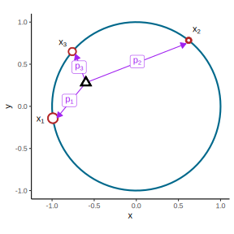
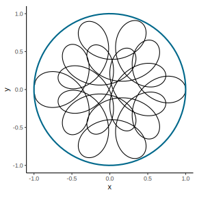
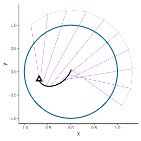

An intuitive (geometric) interpretation of the characteristic function of a random variable
The characteristic function
The characteristic function of a random variable \(X\) is defined as the Fourier Transform of the variable1:
\[ \phi_X(t) = \mathbb{E}[e^{i t X}] \] One of the first questions that arise during a probability course is, of course, what the @&/¬#¢! is that? In this post we aim to remedy this and give some physical intuitions behind such a formula.
De Finetti’s interpretation as a barycentre
Bruno de Finetti in one of his lectures (De Finetti, Galavotti, and Hosni (2008)) gives my favourite interpretation. He reminds us that for any \(x\), the complex valued function \(x \to e^{i x}\), represents a point along the unit circumference. Hence for a discrete random variable \(X\) that takes \(3\) values: \(x_1, x_2, x_3\) with probabilities \(p_1, p_2, p_3\), the characteristic function at \(1\) is given by the weighted average of three points in the unit circumference:
\[ \phi_X(1) = \mathbb{E}[e^{iX}] = \sum\limits_{k=1}^3 p_k e^{i x_k} \]
We can think of each \(x_k\) as pulling the unit disk by \(p_k\) in their respective direction (red dots). The center of mass (barycenter) of the unit disc will lie in \(\phi_X(1)\) (black triangle):

Any rotation by an angle \(t\) will move the barycenter accordingly as the points \(e^{i t x_k}\) will still lie in the unit circle. The path followed by the barycenter is nothing more than \(phi(t)\).

Hence the characteristic function can be thought of as a the function that calculates the center of mass resulting from \(X\) after each rotation \(t\):
\[ \phi_X(t) = \mathbb{E}[e^{i t X}] = \sum\limits_{k=1}^3 p_k e^{i t x_k}. \]
For a continuous random variable we can think of a unit circle with mass all around its circumference. The characteristic function continues to be the center of mass. As the function \(t \to \mathbb{E}[e^{i t X}]\) returns the coordinates of the barycenter for each \(t\) we can think of the characteristic function as a change of coordinates from “classic” to “barycenters”. Sean Carroll characterizes it this way: [the characteristic function] “is just a fancy change of coordinates”.
There are a lot of properties that follow from this interpretation:
Existance is given as if \(X\) exists then \(e^{itX}\) exists and is bounded (see 3). Hence the average \(\mathbb{E}[e^{i t X}]\) also exists.
\(\phi(0) = 1\) as \(e^0\) lies on the circumference at \((1,0)\).
That the function is bounded by one, \(|\phi(t)| \leq 1\), follows from its characterization as a path of barycenters inside the unit circle.
If \(X\) and \(Y\) are independent then \(\phi_{X,Y}(s,t)\) is a rotation of \(X\) by \(s\) and of \(Y\) by \(t\). Their independence ensures that rotating one doesn’t rotate the other, hence \(\phi_{X,Y}(s,t) = \phi_{X}(s)\phi_{Y}(t)\).
By the same argument, if \(X\) and \(Y\) are independent, rotating \(X\) and \(Y\) separately and then adding their masses results in the same barycenter as adding their masses and then rotating the mixture: \(\phi_{X + Y}(t) = \phi_{X}(t)\phi_{Y}(t)\).
We’ll see that this intuition also helps us understand the inversion theorem.
A geometric interpretation of the inversion theorem
The characteristic function \(\phi(t)\) corresponds to the path of the barycentre of the circumference as the points around it rotate by \(t\). This represents a unique signature2:

Before going into the inverse transform there remains a second point of interest. As was seen in the previous animation, a fixed \(x_k\) in \(e^{itx_k}\) represents the “speed” at which the particle (that pulls the barycenter with weight \(p_k\)) travels around the circumference. Intuitively if you think of \(t\) moving from \(-\pi\) to \(\pi\), then \(x_k = 1\) represents the reference speed for traveling around the circumference. Any \(x_k > 1\) will result in a path that goes around faster and travels more than a cycle while \(x_k < 1\) will not complete a full cycle in the \([-\pi,\pi]\) period.
Now we can go and interpret the inverse fourier transform. By taking \(\phi(t)\) and multiplying it by \(e^{-itx_k}\) (for a fixed \(x_k\)) we project outwards from the barycenter. As the angle \(t\) varies from \(-\pi\) to \(\pi\), the barycenter is pulled by a force \(p_x\) that moves at speed \(x\) around the circumference.

Averaging all around the circumference (i.e. from \([-\pi,\pi]\)) returns the average pull that moves at speed \(x\) and pulls the barycentre in its direction. The normalization of this (dividing by the \(2\pi\) of the circumference’s length) corresponds to \(\mathbb{P}(X =x)\).
Hence the inversion theorem for discrete random variables follows:
\[ \mathbb{P}(X = x_k) = \frac{1}{2\pi} \int\limits_{-\pi}^{\pi} e^{-itx_k} \phi(t) dt. \]
So, what do you think? Has the geometric interpretation helped you in understanding the characteristic function? Let me know!